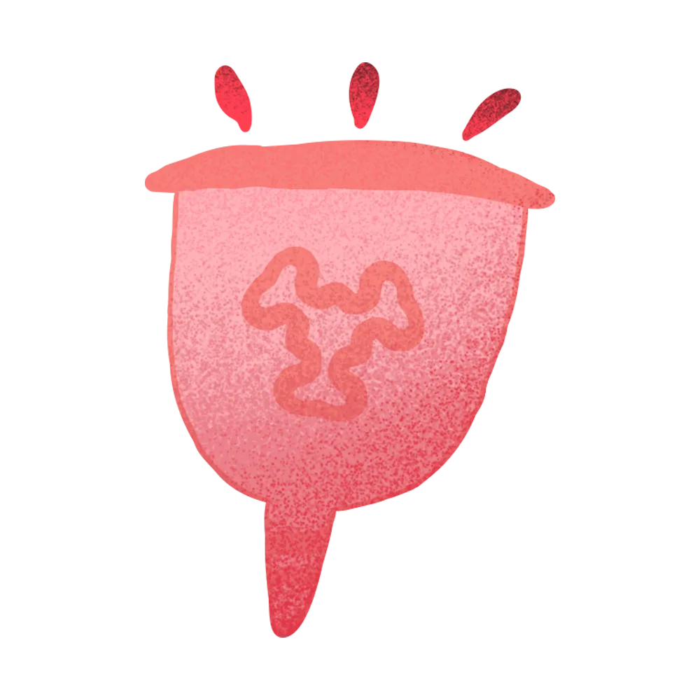
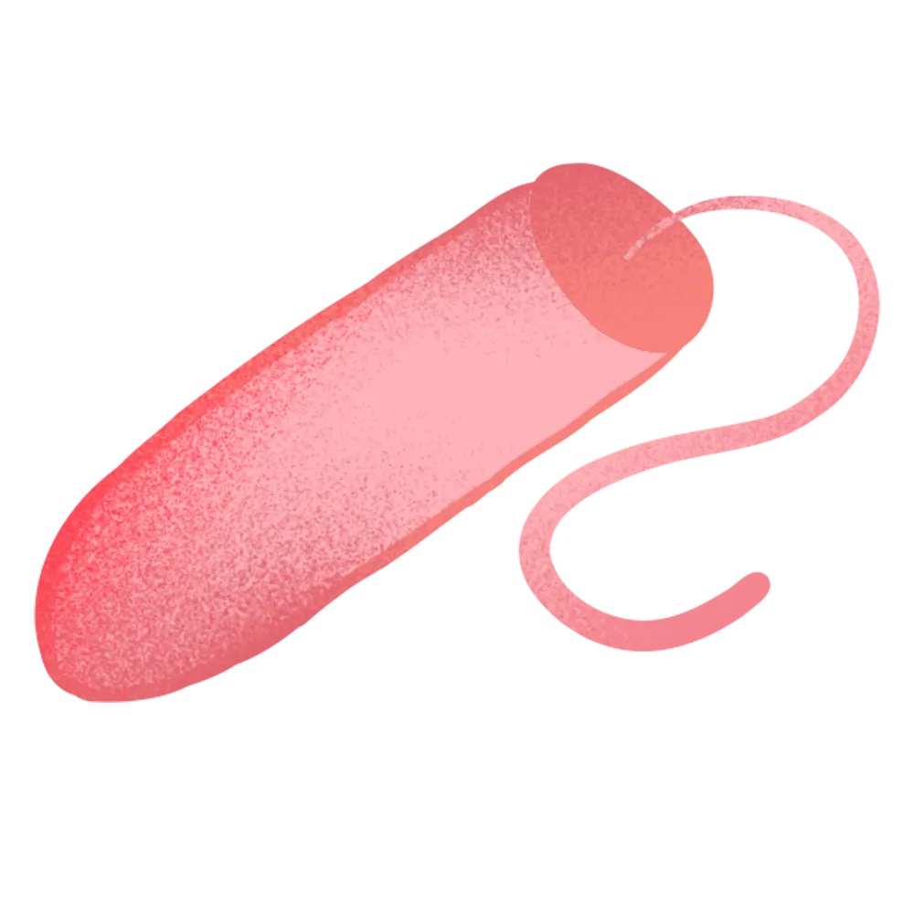
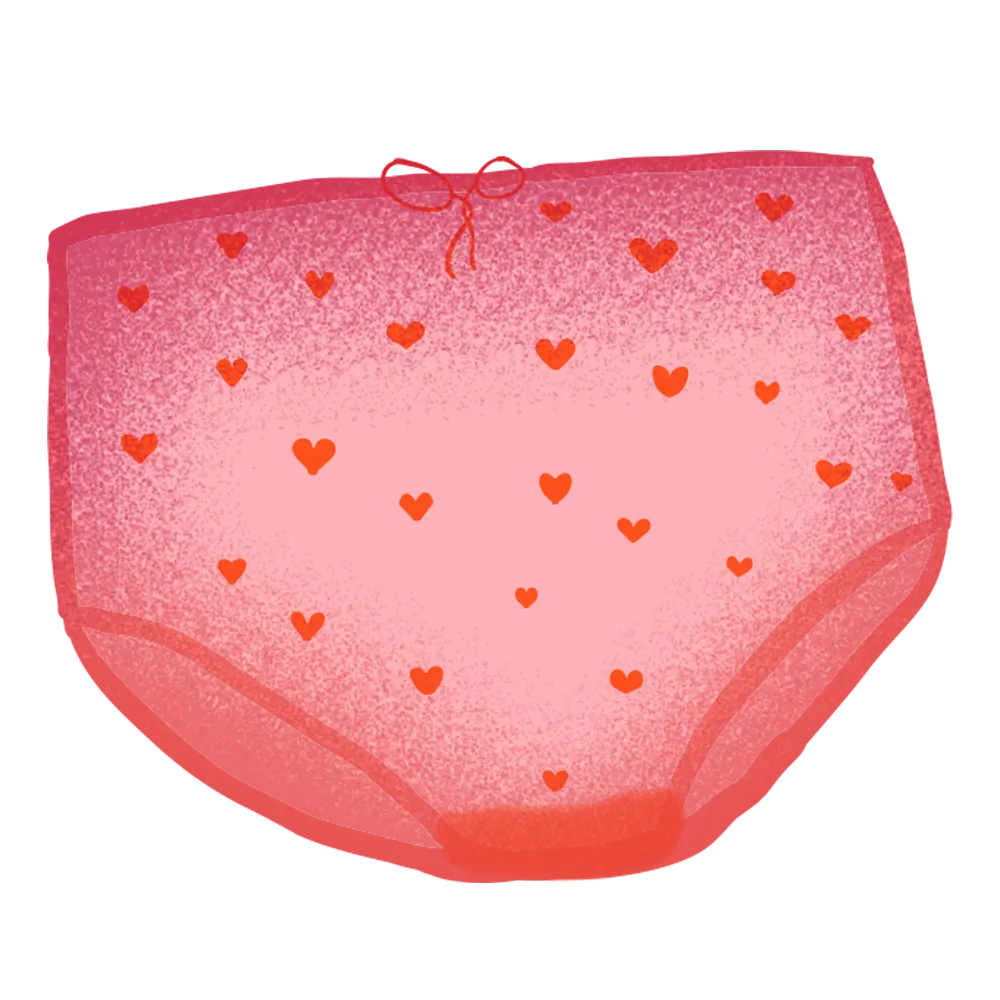

<!DOCTYPE html>
<html lang="da">
<head>
    <meta charset="UTF-8">
    <meta name="viewport" content="width=device-width, initial-scale=1.0">
    <title>Steno museet</title>
    <link rel="stylesheet" href="../css/style.css">
    <link rel="stylesheet" href="../css/spil.css">
    <link href="https://fonts.googleapis.com/css2?family=Fredoka:wght@300..700&display=swap" rel="stylesheet">
    <link href="https://fonts.googleapis.com/css2?family=Fredoka:wght@300..700&family=Open+Sans:ital,wght@0,300..800;1,300..800&display=swap" rel="stylesheet">
    <link rel="icon" href="../images/favicon.ico" type="image/x-icon">
</head>

<!-- Billeder til "Slutningen på Susi-Spil" -->
<body>
    <aside class="bind-kop top-left">
        <figure class="bind">
          
        </figure>
        <figure class="kop">
          
        </figure>
      </aside>
      
      <aside class="tampon-trusser bottom-right">
        <figure class="tampon">
          
        </figure>
        <figure class="trusser">
          
        </figure>
      </aside>
      
      <!-- Knap tilbage til starten -->
      <aside class="image-btn-container">
        <button id="restart-button" onclick="location.href='../index.html'">Til forsiden</button>
      </aside>

      <script src="../js/timer.js"></script>
</body>
</html>